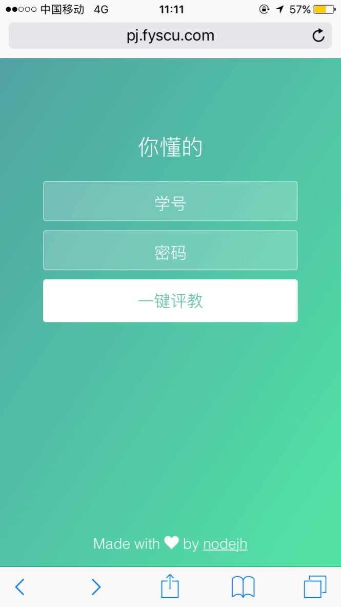
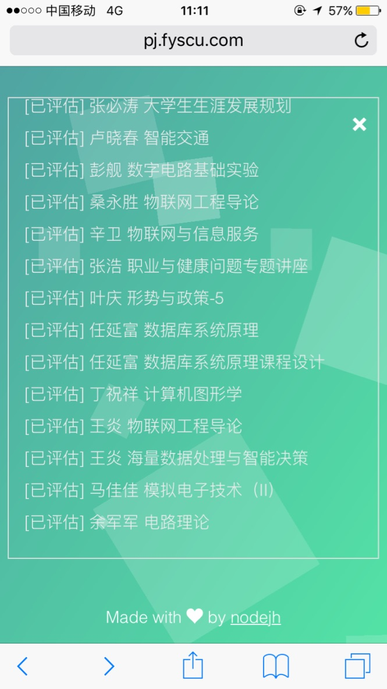

大到一个企业级应用，小到类似于该一键评教软件，都有自己的软件架构设计。通常来说，对于同一个需求，实现方式是多种多样的。
如何设计应用逻辑，如何组织代码模块，如何确定目录结构等等， 都需要在编码之前进行考虑。每个人的编码风格不尽相同，写出来的代码也各有千秋。要想得出一个最佳实践，就要不断总结自己的过往经验，学习别人的优秀设计，并再次将其运用于实践才能真正理解其中的奥义。
本文主要就是介绍一键评教程序的软件结构设计，并对代码进行简要分析，同时也会讲述一些自己遇到的问题。
1. 什么是一键评教 🔗
首先声明，该程序的本质目的是用于学习交流。
每学期进行教学评估的时候，都要评很多教师，每个教师都有很多选项，再加上教务系统网站比较老旧，操作不方面，评教总是要花很长时间。
“一键评教，用过都说好”。线上地址 http://pj.fyscu.com ，源码 https://github.com/nodejh/teach_evaluation 。
爱美之心人皆有之，我也很喜欢好用又好看的事物，所以我在写代码的时候也尽量做到好看又好用。软件截图如下，是不是很好看：


2. 功能分析 🔗
需求很明确，就是能够在一个网页上实现点击按钮自动评估所有教师。那么要实现这样的需求，该怎么去做呢？
先来想想我们通常手动评教的步骤：
- 登录进入教务系统网站
- 找到教学评估链接并进入，这个时候就能看到所有需要进行评估的教师列表
- 从教师列表中点击某个教师，进入到该教师的教学评估页面
- 填写各种需要填写的表单
- 填写完毕之后，点击提交按钮进行评教
- 一切正常的情况下，则对该教师评教成功
- 然后返回到教师列表页面，选择下一个需要评估的教师
- 重复
3-7这五个步骤，直到所有教师评估完毕
要用程序实现一键评教，其实就是用程序模拟上面的步骤。所以程序要实现的主要功能有：
- 模拟登录，获取 cookie
- 获取需要评估的教师列表
- 对列表中的每个教师进行评教
然后我们需要一个用户界面来让用户进行操作。这个界面可以是 APP，也可以是网页。由于网页更方便更利于传播，所以我选择了网页。所以我们就还需要一个 HTTP 服务器，用来提供静态页面资源，并且接收并响应用户操作后发送的 HTTP 请求。
3. 软件设计 🔗
软件设计主要从三个方面来说明。一是技术选择，二是软件架构，三是目录结构。
3.1 技术选择 🔗
首先是各种技术的选择，包括前后端编程语言（语法）、第三方模块的选择、和服务器部署。
3.1.1 后端语言 🔗
该程序后端使用的是 Node.js。我的 Node.js 版本是 7.3。大量使用了 ES6 的语法，比如 Promise、模板字符串、箭头函数。只要你的 Node.js 版本 >= 6.0 应该都是可以运行的。
3.1.2 第三方模块 🔗
在开发程序之前，我想要尽量让应用的体积足够小，所以我尽量不使用第三方模块。
最终我只使用了 cheerio 和 icon-lite 这两个第三方包。
cheerio主要用来分析抓取到的 HTML 文档。其实最开始也想不用cheerio，直接使用正则表达式来分析页面的，但正则表达式编写麻烦，我的能力也有限，所以最终选择了使用cheerio。icon-lite则是用来对GBK文本进行解码。因为教务系统网站使用的是 GBK 的编码，所以直接抓取的结果是乱码的。除了icon-lite这个包，我找不到其他的可以解决乱码问题的方案了。
3.1.3 编码规范 🔗
然后使用了 ESLint 来规范代码。主要是用的是 airbnb 的 Eslint 规则，并且根据自己的喜好对 .eslintrc 作了配置。具体配置在源码
.eslintrc
中可以看到。
3.1.4 前端技术 🔗
为了减小代码体积，提高加载速度，节省带宽，前端没有使用任何第三方 JS 库。并且这只是一个小应用，有没有必须使用庞大（相比该程序而言显得庞大）的第三方库。
前端使用的是 ES5 的语法。最开始想用 ES6 来写的，但 ES6 写好的代码还需要编译成 ES5 才能在浏览器运行，并且还需要引入各种 polyfill，最终还是决定使用 ES5。
前端唯一使用了第三方资源的，只有两个字体图标了。一个是 heart 的图标 ❤️，毕竟是用心写的代码，Made with ❤️ by nodejh；还有一个就是“关闭”小图标。图标使用的是
IcoMoon
的字体图标库，可以自己在里面找到需要的图标然后下载使用。
该程序只有 index.html 这一个 HTML 文件，所以本质上也是一个单页应用。所有的操作和交互都在这一个页面完成。
3.1.5 前端代码压缩 🔗
为了进一步压缩前端资源文件的体积，所以对静态资源进行了压缩。
压缩 CSS 使用的是在线压缩工具 CSS Compressor 。
压缩 JS 使用的是 UglifyJS2 。
3.1.6 部署 🔗
完成编码后，代码是部署在 Ubuntu 16.04 上的，然后使用了 pm2 进行进程的管理。
3.2 软件架构 🔗
程序的整体架构主要分为三层，可以就将其理解为 MVC 的三个层次。
MVC 是一种设计模式，设计模式不是一层不变的，我们需要根据自己的实际业务灵活运用。MVC 是一个很经典的设计模式，生活中的很多事物，我们也可以根据 MVC 对其进行定义。就拿人来进行类比，大脑就是 C（Controller），控制着人的一切活动。躯体外表就是 V（View） 层，一方面是表现着一个人的外观，另一方面是人的各种活动的外在表现。体内各种器官比如心脏、肺等就相当于 M（Model），从表面可能并不能直观看到 M 层的作用，但它受大脑控制，进行着血液循环呼吸系统等重要功能，而这些器官可能又跟躯体相互作用，比如影响人的精神面貌或高矮胖瘦。
说正经的。
首先是该一键评教程序的 M 层，包括页面抓取、页面分析和评教等功能模块。
然后是 V 层，主要是前端页面，直接给用户使用，与用户交互的界面。比如用户点击“开始”按钮的时候，就向 C 层发送一个 HTTP 请求。
C 是控制中心，接收 V 层的 HTTP 请求，根据 HTTP 请求决定调用哪些 M 层的模块，然后将模块调用后的处理结果返回给 V。
这样一个事件的处理流程可能就是：
V(HTTP 请求)---> C (调用 M 的对应模块)---> M(返回处理结果) ---> C(HTTP 响应) ---> V
3.3 目录结构 🔗
了解了软件的整体架构之后，就来看看代码的目录结构，代码的目录结构也完美地印证了这三层架构。
代码的主要目录／子目录及其功能如下：
|____app.js # 入口文件
|____controller # C 层目录，定义了各种控制器
| |____evaluate.js # 评教的控制器
| |____evaluationList.js # 获取需要评教列表的控制器
| |____staticServer.js # 静态服务器控制器
|____helper # 一些自定义的功能模块
| |____colors.js # 十六进制颜色代码，主要是为了改变 console.log 的颜色
| |____dateformat.js # 时间格式化
| |____getContentType.js # 获取文件后缀名对应的 Content-Type，用于静态服务器
| |____log.js # 自定义的彩色 console.log() 输出，告别满屏黑白日志
| |____request.js # HTTP 请求的封装
|____models # M 层目录，定义了各种模块及实现
| |____evaluate.js # 评教功能模块
| |____getEvaluationList.js # 获取需要评教的教师列表
| |____loginZhjw.js # 模拟登录教务系统
| |____showEvaluatePage.js # 显示某个具体的评教页面
看完目录结构，再回头看看软件的三层架构，肯定就清晰很多了。
4. 代码分析 🔗
接下来再对一些重要的功能模块以及涉及到的代码进行简要分析。相信了解完代码的执行流程之后，对软件的整体架构理解，定会再进一步。
4.1 app.js 🔗
app.js 是整个项目的入口文件，启动项目的时候使用 node app.js 即可启动。
在 app.js 里面，主要是创建了 HTTP Server，然后根据请求的路径，调用对应的控制器：
if (method === 'POST' && pathname === '/api/evaluationList') {
// 模拟登录，获取需要评教的老师列表
return evaluationListController(req, res);
}
if (method === 'POST' && pathname === '/api/evaluate') {
// 评教
return evaluateController(req, res);
}
if (method === 'GET') {
// 所有 GET 请求都当作是请求静态资源
return staticServerController(req, res);
}
当请求方法是 POST 且路径是 /api/evaluationList 时，就说明前端是发送的一个获取需要评估的教师列表的请求，所以紧接着执行 evaluationListController(req, res);，调用该控制器，并且使用 return 来停止代码的执行。
如果有新的 API 的请求，都可以在这里加。
如果所有的自定义的请求及路径都不满足，并且请求的方法是 GET，那就当作是请求静态资源文件，如 HTML、CSS、JS 或图片等。这里就调用 staticServerController(req, res)。staticServerController 是在 Controller 里面定义的返回静态文件的方法。
如果 GET 请求也不是，则返回 400 Bad Request。
然后程序监听了 5000 端口，这样发送请求到 5000 端口，代码就能接收到请求并进行处理了。
4.2 静态资源服务器 🔗
前面已经提到了，staticServerController 是在 Controller 里面定义的返回静态文件的方法，也就是一个静态资源服务器。
因为我们的软件很简单，所以完全没有必要使用 express 或 koa 等框架，自己写一个简单的静态服务器完全足够应对所有业务需求了。
主要代码如下，代码优美，注释详尽，通俗易懂：
/**
* 静态服务器
* @param {object} req request
* @param {object} res response
* @return {null} null
*/
const staticServerController = (req, res) => {
let pathname = url.parse(req.url).pathname;
if (path.extname(pathname) === '') {
// 没有扩展名，则指定访问目录
pathname += '/';
}
if (pathname.charAt(pathname.length - 1) === '/') {
// 如果访问的是目录，则添加默认文件 index.html
pathname += 'index.html';
}
// 拼接实际文件路径
const filepath = path.join(__dirname, './../public', pathname);
fs.access(filepath, fs.F_OK, (error) => {
if (error) {
res.writeHead(404);
res.end('<h1>404 Not Found</h1>');
return false;
}
const contentType = getContentType(filepath);
res.writeHead(200, { 'Content-Type': contentType });
// 读取文件流并使用管道将文件流传输到HTTP流返回给页面
fs.createReadStream(filepath)
.pipe(res);
});
};
这里需要稍微留意的是 getContentType 这个方法，这个方法的定义和实现被放在了 helper/getContentType.js 里面，其主要作用，就是根据请求路径的后缀名来确定 HTTP Response 里面的 Content-Type 类型，以便浏览器或客户端识别：
/**
* 获取 Content-Type
* @param {string} filepath 文件路径
* @return {string} 文件对应的 Conent-Type
*/
const getContentType = (filepath) => {
let contentType = '';
const ext = path.extname(filepath);
switch (ext) {
case '.html':
contentType = 'text/html';
break;
case '.js':
contentType = 'text/javascript';
break;
case '.css':
contentType = 'text/css';
break;
case '.gif':
contentType = 'image/gif';
break;
case '.jpg':
contentType = 'image/jpeg';
break;
case '.png':
contentType = 'image/png';
break;
case '.ico':
contentType = 'image/icon';
break;
case '.manifest':
contentType = 'text/cache-manifest';
break;
default:
contentType = 'application/octet-stream';
}
return contentType;
};
这样我们的一个简单的静态资源文件服务器就成型了，单独把这两段代码拿出去也是完全可以运行的。
当用户请求 localhost:5000 的时候，根据上面的代码，就会去寻找 public/index.html 这个文件然后返回给客户端。
index.html 就是我们的前端页面。
4.3 模拟登录 🔗
要想获取评教列表或进行评教，第一步就是登录教务系统。经抓包分析，教务系统使用的是 session cookie 的认证机制，关于如何抓包分析，可以看我的另一篇文章《模拟登录某某大学图书馆系统》[http://nodejh.com/post/Crawler-for-SCU-Libirary/]。这一步我们需要获取登录后的 cookie。
登录的时候，是向 http://202.115.47.141/loginAction.do 发送的 POST 请求，请求的 Content-Type 是 application/x-www-form-urlencoded ，参数是 zjh=xx&mm=xx。
曾经教务系统可以使用 GET 方式登录，所有有一种快捷登录方式，就是在浏览器地址栏 http://202.115.47.141/loginAction.do?zjh=[你的学号]&&mm=[你的密码]。而且这种方法可以绕过“登录人数已满”的限制。这在选课时期，这种强制的登录方式还是很好用的。不过 GET 方法也有缺点就是，你的学号和密码就直接暴露了，不安全。曾经还通过 Google 搜索，搜到了某个同学的账号及密码。现在教务系统估计是升级了禁止了这个方法。
模拟登录教务系统的程序在 models/loginZhjw.js 里面，详细代码就不贴了，总的来说，就是通过 Node.js 的 HTTP 模块，设置一个自定义的 HTTP Headers 信息，然后发送 HTTP 请求。当然，其他任何编程语言道理都一样。
模拟登录后，教务系统会返回 HTTP Response。HTTP Response 的 Content-Type 都是 text/html，也就是说返回的始终都是 HTML 文本。所以我们就可以根返回的 HTML 文本的内容判断是否登录成功。
如果文本包含下面 errorText 对象的属性字符串之一，都是登录失败：
const errorText = {
number: '你输入的证件号不存在，请您重新输入！',
password: '您的密码不正确，请您重新输入！',
database: '数据库忙请稍候再试',
notLogin: '请您登录后再使用',
};
同时，也经过抓包发现，登录成功后返回的 HTML 文本的 title 部分是：
<title>学分制综合教务</title>
而其他情况都不是。所以就可以大致判断，除了上面几种 errorText 是登录失败之前，只有返回的 HTML 包含 <title>学分制综合教务</title> 才是返回成功。
登录成功后的 HTTP Response Headers 部分含有一个 set-cookie 属性，而这个属性的值就是登录成功后的 cookie。我们抓那么多包，做了那么多准备，找的就是它。所以最终从登录成功的响应中取出 cookie 的代码如下：
const cookie = result.headers['set-cookie'].join().split(';')[0];
之后获取需要评估的教师列表和评教，都需要在发送 HTTP 请求时在 HTTP Headers 里面带上该 cookie。
4.3 获取需要评估的教师列表 🔗
获取需要评估的教师列表就简单很多了，发送的是 GET 请求，然后在 HTTP Headers 里面设置 Cookie 即可，其头发送 HTTP 请求的头信息大概如下：
const options = {
hostname: '202.115.47.141',
port: 80,
path: '/jxpgXsAction.do?oper=wjShow',
method: 'POST',
headers: {
Cookie: data.cookie,
'Content-Type': 'application/x-www-form-urlencoded',
'Content-Length': Buffer.byteLength(postData),
},
};
4.4 进行评教 🔗
获取到教师列表之后，就可以进行评教了。但这里有一个坑，就是进行评教之前，必须先访问评教页面，再发送评教请求。不然是无法评教成功的。就是这个问题，导致我纠结了好久。
也就是说，用程序模拟评教的时候，就要发送两个 HTTP 请求了，一是发送请求到某个老师的评教页面，对应的是 models/showEvaluatePage.js 这个文件；二是发送评教请求，对应的是 models/evaluate.js。而且这两个请求都是 POST 类型的。所以代码类逻辑似于下面这样：
// 显示评教页面
showEvalutePage(data)
.then(() => {
// 评教
return evaluate(data)
})
.then((result) => {
// 评教结果
})
.catch((exception) => {
// 捕获异常
});
4.5 public/js/style.js 🔗
前端的 JS 代码都在 style.js 这个文件里面了，主要就是监听了按钮的点击事件，然后发送 HTTP 请求，并根据请求结果增删页面的 DOM。
前端由于没有使用 jQuery 等第三方库，所以操作 DOM 和事件监听都是原生 JS 实现的。发送 AJAX 请求也是自己封装的 XHR 对象。有关于 XHR 的更多内容，可以参考我之前写的 《AJAX: XHR, jQuery and Fetch API》 。
5. 总结 🔗
到这里，这篇文章就基本完成了。本文讲述的实践，可能也不是最佳的实践，也有很多值得继续商讨和改进之处。只有不断实践，不断总结，才能写出更美的代码。人生不也一样？总结过去的教训，才能更好地前行。
Github Issues https://github.com/nodejh/nodejh.github.io/issues/36